Geometry-Free
NOVEL VIEW SYNTHESIS WITH DIFFUSION MODELS
本文提出了3DiM，一个用于3D新视角合成的扩散模型。3DiM的核心部分是pose-conditional image-to-image diffution model，将source view和它的pose作为输入，生成目标pose的新视角。3DiM用一种新技术，stochastic conditioning，生成3D consistent的多视角。输出视角是自回归生成的，在每个新视角的生成过程中，在每一个denoising step中选一个随机的conditioning view。

贡献：
- 3DiM, geometry-free image-to-image diffusion model，用于新视角合成
- stochastic conditioning 采样算法，更3D-consistent的输出
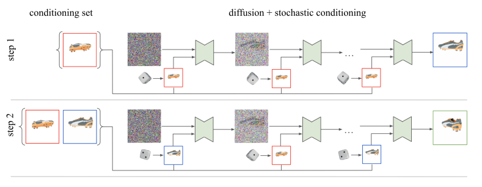 - 新的UNet结构变体 X-UNet，在两个输入帧（clean conditioning view, denoising target view）之间共享同一个UNet权重，加入了cross attention layers融合输入和输出视角的信息
- 对geometry-free视角合成模型的新的评估方法：3D consistency scoring，通过在模型输出上训练神经场来数值地衡量3D consistency
实验：SRN ShapeNet dataset，单视角生成higher fidelity, approximately 3D consistent
Geometry-Aware
in 2D image space
used in optimization
with pretrained models
DreamFusion: Text-to-3D Using 2D Diffusion (ICLR 2023)
Motivation：将扩散模型用于3D合成，需要大规模的成对的3D-text数据集和高效的3D数据降噪结构，而目前这些是稀缺的。目前从vision-language model知识迁移到text-to-3D的方法有两种，CLIP & Diffusion Model
Method：用NeRF渲染某个视角下的图像，作为扩散模型的输入；用扩散模型（这篇论文中用的是Imagen）对加噪后的图像和文本之间的匹配程度进行打分，利用扩散模型计算出来的损失来更新NeRF的参数。扩散模型是预训练的，参数是固定的。
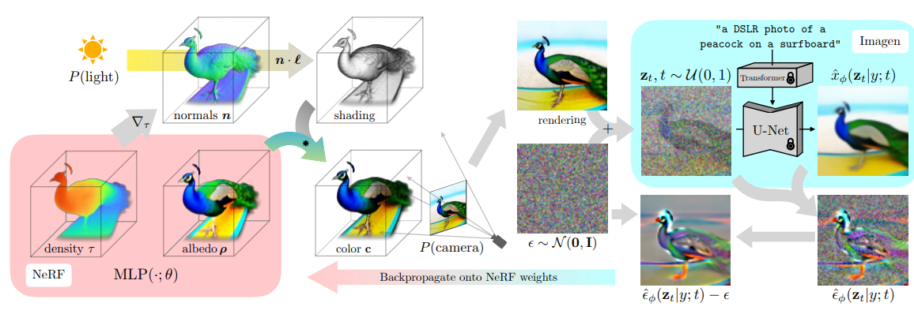
DDPM用的是Ancestral Sampling，本文介绍了一种新的采样方法——基于probability density distillation的loss，用扩散模型指导NeRF的更新，通过梯度下降优化一个随机初始化的3D模型，使得任意视角渲染得到的2D图像都有较低的loss。
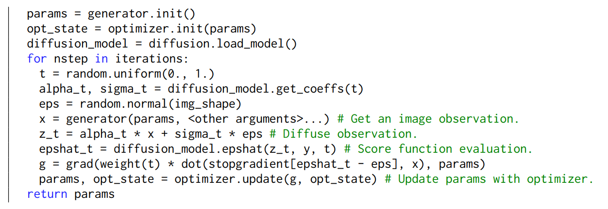
贡献：
- 提出DreamFusion，不需要3D或者多视角的训练数据，只需要预训练的2D扩散模型来引导NeRF的优化从而进行text-to-3D的合成，具有zero-shot生成能力
为了将2D图像扩散模型迁移到3D空间，本文提出一种新的方法，Score Distillation Sampling（SDS）
问题：
- 分辨率低（64*64）
- 训练时间比较长（1.5h for each caption）
- 生成结果和目标文本不一致
Score Jacobian Chaining: Lifting Pretrained 2D Diffusion Models for 3D Generation（CVPR 2023）
本文提出对梯度使用链式法则，通过可微渲染器（被初始化为voxel radiance field）的Jacobian反向传播扩散模型的score。这种方法将多视角的2D scores融合进3D score，重新提出了用于3D生成的预训练2D模型。我们指出分布不匹配的技术难点，并提出了一种新的估计方法来解决它。我们在多个现成的扩散图像生成模型上跑了我们的算法，包括在LAION 5B数据集上训练的Stable Diffusion。
贡献：
- 提出了一种通过链式法则将2D扩散模型提升到3D的方法
- 阐释了使用预训练降噪器会遇到的 out-of-distribution (OOD) 问题（比如输入的就是一个无噪声的图像），并提出Perturb-and-Average Scoring (PAAS)，也就是加上一个噪声来解决该问题
- 指出了使用Perturb-and-Average Scoring作为梯度进行优化会造成的一些开放问题
- 阐述了Score Jacobian Chaining在3D文本驱动生成问题上的有效性
NeRDi: Single-View NeRF Synthesis with Language-Guided Diffusion as General Image Priors
2D-to-3D重建是一个ill-posed problem，人们用3D世界的先验知识来解决这个问题。本文提出NeRDi，一个带有从2D扩散模型获得的图像先验的单视角NeRF合成框架。将单视角重建看做 image-conditioned 3D生成问题，利用输入视角约束下的预训练扩散模型，通过最小化任意视角渲染的diffusion loss来优化NeRF representations。我们用现有的视觉-语言模型，并引入two-section语言引导作为扩散模型的conditioning input，这对提高多视角内容的一致性有很大帮助，因为它缩小了基于单视角图片的语义和视觉特征的图像先验的范围。另外，我们引入了一个基于估计的深度图的geometric loss，用来正则化NeRF的3D geometry。在DTU MVS数据集上的实验结果表明，我们的模型可以进行高质量的新视角合成。我们还说明了该模型在zero-shot（零样本）NeRF合成上的通用性，用于野外的图像合成。
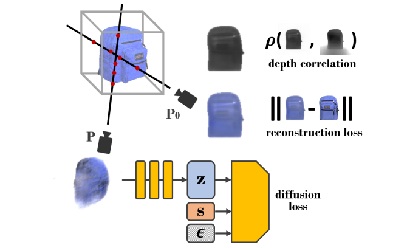
loss = 固定的输入视角的重建损失 + 任意采样视角diffusion loss + 输入视角的depth correlation loss
贡献：
- 将单视角重建看成是conditioned 3D生成问题，并提出了单张图片的NeRF合成框架，不需要3D监督，而是使用在大规模图片数据集上训练的扩散模型的2D先验
- 设计了一个two-section semantic guidance，将在所有图像上通用的先验narrow down到和输入图像$x_0$相关的；two-section分别指image captioning/classification network和textual inversion，将它们各自产生的text embedding连接起来，作为guidance
- 在包含3D不确定性的估计的深度图中，引入geometric regularization term
在DTU MVS上验证了zero-shot新视角合成的结果，在in-the-wild images的新视角合成中能生成高质量图像
NeRDi vs. DreamFusion：都是利用2D image diffusions优化新视角的NeRF渲染结果；不同点是，DreamFusion是用用户指定的语言输入来进行无约束的NeRF生成，而NeRDi用单视角图像输入的特征来约束新视角的image distributions。
NeuralLift-360: Lifting An In-the-wild 2D Photo to A 3D Object with 360{\deg} Views
本文提出NeuralLift-360，使用depth-aware NeRF并学习用扩散模型描述场景，可以用一张图片生成3D物体。通过引入ranking loss，NeuralLift-360可以被野外粗糙的深度估计引导。我们同时也对扩散先验采用了CLIP-guided采样策略，从而提升一致的guidance。
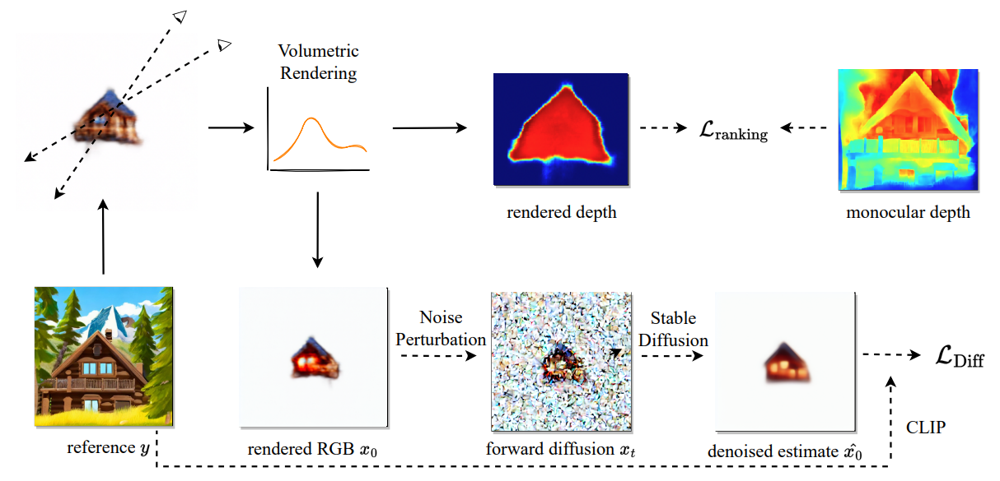
贡献：
- 野外单张图片可以被lift到3D
- 提出CLIP-guided采样策略
- 当reference image很难被描述时，我们finetune扩散模型，同时保持生成多样内容的能力
- 介绍了一种利用ranking信息的scale-invariant depth supervision，从而减轻了对精确的多视角一致的深度估计的需求，拓展了本文算法的应用场景
SceneScape: Text-Driven Consistent Scene Generation
提出一种text-driven perpetual view generation的方法，对于一段描述场景和相机位姿的输入文字prompt，能够合成一段视频。我们的新模型将预训练的text-to-image模型的生成能力和预训练的单目深度预测模型的geometric priors结合起来，可以在线生成这样的视频。为了解决3D一致性的问题，我们部署了在线的测试时训练，鼓励预测得到的当前帧深度图和合成场景geometrically consistent。深度图被用来在视频生成过程中逐渐建立一个场景的unified mesh representation。
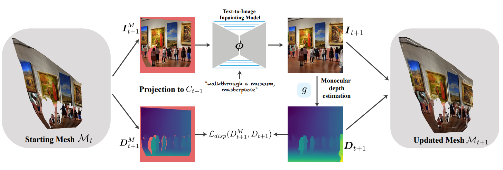
贡献：
- 第一个text-driven perpetual view generation方法
- 第一个zero-shot/test-time场景生成方法，无需在特性的目标domain中进行大规模训练，就能合成多样的场景
- 通过逐步估计unified 3D representation，实现3D一致性生成
without pretrained models
SparseFusion: Distilling View-conditioned Diffusion for 3D Reconstruction (CVPR 2023)
本文提出SparseFusion，一种稀疏视角3D重建方法，将神经渲染和概率图像生成的优势结合起来。目前的方法一般使用reprojected feature进行神经渲染，但是无法生成看不见的区域，也不能处理视角变化很大时的不确定性。其他方法将此看做一个概率2D合成任务，虽然能生成很好的2D图像，但是很难在3D空间中推理出一致性。我们发现这种3D一致性和概率生成之间的矛盾是没有必要的。本文展示了geometric consistency和生成推理可以以mode-seeking的形式互为补充。通过从view-conditioned latent diffusion model (VLDM)中蒸馏3D一致的场景表示，我们可以恢复出很好的3D representation，能够渲染出精准的、真实感的图像。
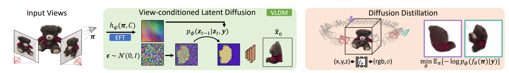
Epipolar Feature Transformer (EFT)：从query camera射出一条光线，沿着epipolar line采样得到的feature，将feature输入EFT，预测得到RGB color和一个特征向量；在整个图像上进行该操作，就能得到一张RGB图像和一个view-aligned feature grid $y$，将RGB图像当做baseline，用$y$作为扩散模型的condition input。
diffusion distillation：实现3D一致性；在latent space中计算loss和梯度比在pixel space中更好。NerfDiff: Single-image View Synthesis with NeRF-guided Distillation from 3D-aware Diffusion (ICML 2023)
目前的方法用局部图像特征来condition NeRF，结合2D特征进行体渲染。然而，在严重的遮挡情况下，投影难以解决不确定性，造成渲染结果模糊、缺失细节。本文提出用NerfDiff解决此类问题。通过在test-time合成并精细化一组virtual views，将3D-aware conditional diffusion model (CDM)的知识迁移到NeRF。我们进一步提出一种新的NeRF-guided distillation算法，从CDM samples中生成3D一致的virtual views的同时，基于这些virtual views对NeRF进行finetune。
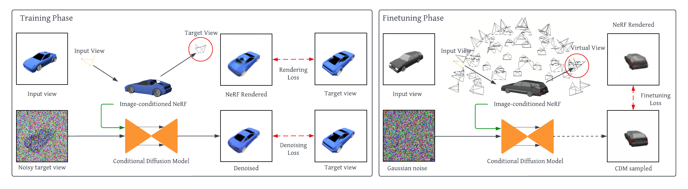
Training：分别训练一个single-image NeRF和一个以NeRF的渲染结果作为condition的2D CDM。
Finetuning：在测试时，用学习到的网络参数预测一个初始的NeRF representation，然后用CDM去噪后的图像来监督NeRF。
结构：用UNet将输入图像映射到相机对齐的triplane-based NeRF representation，可以很好地从对体渲染进行目标视角的约束。渲染结果将会作为扩散过程的condition，从而使CDM在目标视角能够一致地进行去噪。
used in generation
RenderDiffusion: Image Diffusion for 3D Reconstruction, Inpainting and Generation
RenderDiffusion是第一个用于3D生成和推理的扩散模型，可以被训练成只使用单目2D监督。该方法的核心在于一个在每个denoising step中可以生成、渲染场景的中间3D表示的新的图像去噪结构。这将一个很强的推理结构加入了扩散过程，让我们能得到3D一致的表示，同时只需要单目2D监督。另外，我们可以用2D inpainting来编辑3D场景。
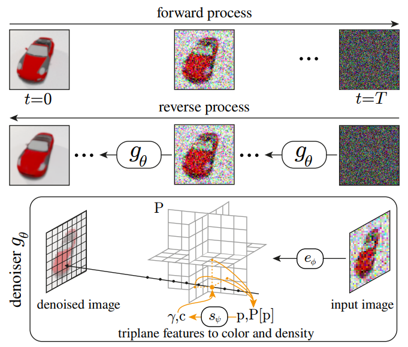
传统的denoiser预测每一步图片上加的噪声，而我们还想同时重建3D场景作为中间表示，所以我们训练的$g_\theta$预测的是$x_0$，也就是clean image，而不是噪声，于是训练损失相应变成$L := ||g_\theta(x_t,t)-x_0||_1$。
结构：denoiser $g_\theta$和传统的用UNet实现的2D扩散模型不一样，它包含3D结构——triplane representation $P$。$P$由一个带噪声的输入图像通过encoder $e_\Phi$推理得到。MLP $s_\Psi$将任意采样点处的triplane features转换成颜色和密度，用来渲染去噪后的输出图像。
triplane representation：将3D feature grid分解成3个2D feature maps，沿着坐标平面放置，能够更紧凑地表示3D信息。每个feature map的分辨率是$N \times N \times n_f$，其中$n_f$是通道数。把一个3D点$p$投影到每个坐标平面上，进行双线性插值并求和，就能得到一个大小为$n_f$的特征向量，表示为$P[p]$。
triplane encoder：将$M \times M \times 3$的输入图片转化成$N \times N \times 3n_f$的triplane representation，其中$N \geq M$。在UNet的基础上，加上一层使输出的feature maps大小和triplane一样。
-
我们用text-guided扩散模型实现3D一致的生成，用类似NeRF的神经场来生成某个相机视角下低分辨率的图像，作为接下来扩散过程的condition。在去噪过程中，我们使用一种新的双流异步扩散过程，通过建模跨视角的对应性来加强3D一致性。我们研究了3D局部编辑，并提出生成360°可操控图像的两步解决方案，第一步是通过融合预测的噪声进行2D局部编辑，第二步是进行noise-to-text逆过程，将融合的噪声映射到视角无关的text embedding space。获得对应的text embedding后，就能生成360°图像。最后，我们将模型扩展，在单张照片上finetuning从而进行one-shot新视角合成。

结构：基于NeRF的condition module接受的输入是一对
，生成低分辨率的coarse results。双流异步扩散模块接受的输入是四元组 ，并预测加上的噪声，每一条流是一个vanilla text-guided diffusion model，除了每个attention block后的特征交互。timesteps是随机产生的，并且两个streams之间参数是共享的。
in 3D/Latent space
GAUDI: A Neural Architect for Immersive 3D Scene Generation
GAUDI是一个能捕捉复杂、真实的3D场景分布的生成模型。我们首先优化解耦场景和相机位姿的latent representation，然后被用来学习能进行条件和非条件生成3D场景的生成模型。相比于之前的关注单个物体的工作，我们并不假定相机位姿的分布能在样本之间共享。
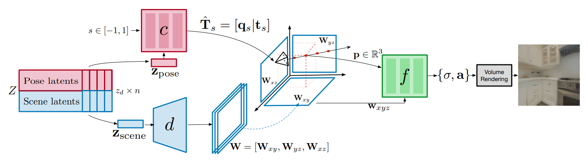
camera pose decoder：用来预测在规范化的临时位置的相机位姿。
scene decoder：将场景解码成triplane的表示形式。
radiance field decoder：对某个点$x$，在triplane中进行双线性插值得到特征向量，作为radiance field的condition。输出体密度$\sigma$和信号$a$，然后进行体渲染。
3D Neural Field Generation using Triplane Diffusion (CVPR 2023)
本文的方法对训练集（比如ShapeNet meshes）进行预处理，将它们转换到连续的occupancy fields中，并分解成一系列坐标轴对齐的triplane features（可以看成是多通道的特征图）。于是，3D场景就能被表示成2D特征平面，在这些场景表示上直接训练现有2D扩散模型，从而生成3D神经场。我们需要对triplane factorization pipeline进行必要的修改，使feature容易被扩散模型所学习。
扩散过程：
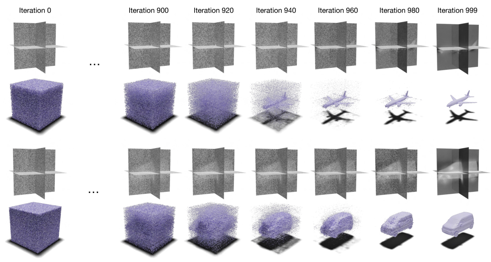
结构：
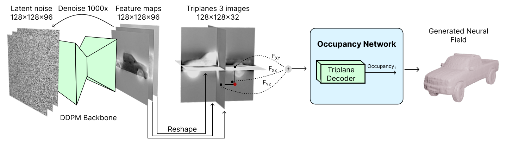
- 用训练好的DDPM将latent noise去噪得到triplane features
用局部条件的Occupancy Network解码triplane，得到神经场
Triplane Diffusion Framework：使用occupancy fields 的3D场景表示，这样的神经场的输出是二进制的，来表明在对象的内部还是外部。
Triplane representation: 是一种显隐式混合的神经场网络架构，使用三个二维特征平面$f_x,f_y,f_z \in \Bbb{R}^{N \times N \times C}$和一个轻量级decoder(MLP)解释平面特征。通过将3D坐标投影到每个轴向平面，查询和聚合各自的特征，并利用MLP解码feature（通过求和来进行特征聚合）。在扩散模型中，将三个平面上的特征堆叠成一张图，
贡献：
提出了利用2D diffusion model backbone并且有内置3D inductive bias的框架来用于三维场景的扩散
- 该方法有能力生成高保真和多样化的3D场景，优于SOTA 3D GANs
Rodin: A Generative Model for Sculpting 3D Digital Avatars Using Diffusion (CVPR 2023)
参考这篇文章。
DiffRF: Rendering-Guided 3D Radiance Field Diffusion (CVPR 2023)
DiffRF是一个基于DDPM的3D radiance field合成方法。目前基于扩散的方法在图像、latent codes或者点云数据上操作，DiffRF在体素网格上操作，是第一个直接生成volumetric radiance fields的工作。由于从posed images中生成的radiance field是有二义性的，获取radiance field的GT并不容易，我们结合denoise损失和渲染损失，使模型学到一个有偏的先验，最终能合成更高质量的图像，避免漂浮物一类的artifacts。相较于2D扩散模型，DiffRF能学到多视角一致的先验。相较于3D GANs，基于扩散的方法能更自然地进行条件生成，比如遮盖补全和单视角合成。
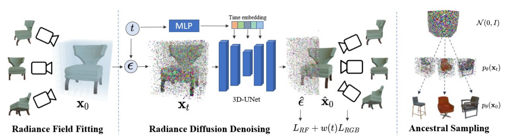
Radiance Fields：本文中用的是voxel-based NeRF (DVGO)，RGB和视角无关；输出的时候没有激活函数，目的是之后加噪声时能够线性地加。
目标函数：$L_{RF}$是扩散过程中的损失，$L_{RGB}$是生成的radiance field渲染出的一些视角结果和GT radiance field渲染出的结果的误差，$t$比较小时，$L_{RGB}$比较reasonable，所以有个权重$\omega_t$，随着$t$增大而减小。
diffusion model：$\epsilon_\theta$是一个3D-UNet，把卷积层和attention层都换成3D的。